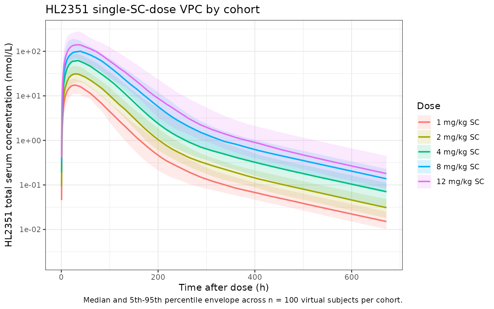

library(nlmixr2lib)
library(rxode2)
#> rxode2 5.0.2 using 2 threads (see ?getRxThreads)
#> no cache: create with `rxCreateCache()`
library(dplyr)
#>
#> Attaching package: 'dplyr'
#> The following objects are masked from 'package:stats':
#>
#> filter, lag
#> The following objects are masked from 'package:base':
#>
#> intersect, setdiff, setequal, union
library(tidyr)
library(ggplot2)
library(PKNCA)
#>
#> Attaching package: 'PKNCA'
#> The following object is masked from 'package:stats':
#>
#> filterHL2351 population PK simulation
HL2351 (hIL-1Ra-hyFc) is a hybrid Fc-fused interleukin-1 receptor antagonist (~97 kDa) developed by Handok Inc. The molecule fuses two human IL-1Ra domains (the active ingredients of anakinra) onto a hybrid IgD-IgG4 Fc hinge so it can bind the neonatal Fc receptor (FcRn), avoid endosomal catabolism, and persist in circulation roughly 7- to 10-fold longer than anakinra (Ngo 2020 Introduction).
Ngo et al. (2020) developed a population PK model from a Phase I single-ascending-dose study (NCT02175056, Seoul National University Hospital) in healthy adult Korean men. The model couples a quasi-steady-state (QSS) target-mediated drug disposition (TMDD) process for IL1R binding in the central compartment with a parallel QSS-TMDD-style FcRn-binding process in a separate distribution space. Reversible binding of free drug to FcRn produces an FcRn-drug complex that is either dissociated back to free drug or transported into the central compartment (the “FcRn-mediated recycling” route, rate constant Krec). Free drug also moves directly from the distribution space to central (Ka2) or is degraded at the absorption site (Kdeg1). In the central compartment free drug binds IL1R (QSS dissociation constant KSS2), with the IL1R-drug complex degraded at Kdeg2; free drug is eliminated linearly (CL/F), exchanged with one peripheral compartment (Q/F, Vp/F), and partially returned to the distribution space (Kup). The packaged model in this file is the HL2351 final model (Ngo 2020 Table 1); the companion anakinra model (Ngo 2020 Table S2 in the Supplementary Materials) is not included.
- Citation: Ngo L, Lee J, Lim L, Lim H, Bae KS, Hong T, Bae S, Hong Y. Development of a Pharmacokinetic Model Describing Neonatal Fc Receptor-Mediated Recycling of HL2351, a Novel Hybrid Fc-Fused Interleukin-1 Receptor Antagonist, to Optimize Dosage Regimen. CPT Pharmacometrics Syst Pharmacol. 2020 Oct;9(10):584-595. doi:10.1002/psp4.12552. PMID: 32945613.
- Article: https://doi.org/10.1002/psp4.12552
Population
The PK analysis data set is a single Phase I study (NCT02175056). 48 healthy adult Korean men aged 20-45 years were randomized 1:1:1:1:1:1 (n = 8 per group) to a single subcutaneous dose of HL2351 1, 2, 4, 8, or 12 mg/kg or anakinra 100 mg. The HL2351 final model is fit to the five HL2351 cohorts only (n = 40); blood samples were collected to 672 hours postdose (Ngo 2020 Methods, “Materials and PK data collection”). Body weight, age distribution, and other demographic covariates beyond age range and sex (all male) are not reported in the trimmed text available on disk, and no covariates are retained in the final structural model.
The same information is available programmatically via
rxode2::rxode(readModelDb("Ngo_2020_HL2351"))$population.
Source trace
All parameter values and functional forms come from Ngo et al. (2020)
CPT Pharmacometrics Syst Pharmacol 9(10):584-595. In-file
comments next to each ini() entry point to the source row;
the table below collects them.
| Equation / parameter | Value | Source location |
|---|---|---|
lka1 (Ka1) |
1.21 1/h | Ngo 2020 Table 1 |
lka2 (Ka2) |
0.0171 1/h | Ngo 2020 Table 1 |
lkrec (Krec) |
0.0338 1/h | Ngo 2020 Table 1 |
lkdeg1 (Kdeg1) |
0.0264 1/h | Ngo 2020 Table 1 |
lkdeg2 (Kdeg2, FIX) |
0.206 1/h | Ngo 2020 Table 1 |
lkup (Kup, FIX) |
0.00952 1/h | Ngo 2020 Table 1 |
lcl (CL/F) |
0.208 L/h | Ngo 2020 Table 1 |
lvc (Vc/F) |
11.3 L | Ngo 2020 Table 1 |
lq (Q/F) |
0.0288 L/h | Ngo 2020 Table 1 |
lvp (Vp/F, FIX) |
5.06 L | Ngo 2020 Table 1 |
la_kss1 (AKSS1) |
237 nmol | Ngo 2020 Table 1 |
la_fcrn_t (AFcRn_t) |
749 nmol | Ngo 2020 Table 1 |
lkss2 (KSS2) |
14.5 nmol/L | Ngo 2020 Table 1 |
lc_il1r_t (CIL1R_t) |
2.23 nmol/L | Ngo 2020 Table 1 |
lalag (Alag) |
0.312 h | Ngo 2020 Table 1 |
IIV etalka1 (Ka1) |
97.4% CV → ω² = 0.6672 | Ngo 2020 Table 1 |
IIV etalka2 (Ka2) |
72.4% CV → ω² = 0.4215 | Ngo 2020 Table 1 |
IIV etalkrec (Krec) |
33.2% CV → ω² = 0.1046 | Ngo 2020 Table 1 |
IIV etalkdeg1 (Kdeg1) |
27.5% CV → ω² = 0.0729 | Ngo 2020 Table 1 |
IIV etalkup (Kup) |
90.4% CV → ω² = 0.5973 | Ngo 2020 Table 1 |
IIV etalcl (CL/F) |
22.9% CV → ω² = 0.0511 | Ngo 2020 Table 1 |
IIV etalalag (Alag) |
55.5% CV → ω² = 0.2685 | Ngo 2020 Table 1 |
addSd |
0.184 nmol/L | Ngo 2020 Table 1 (residual variability) |
propSd |
0.115 (11.5%) | Ngo 2020 Table 1 (residual variability) |
QSS approximation Eq. 4 (a_dfree1) |
n/a | Ngo 2020 Eq. (4) |
QSS approximation Eq. 5 (c_dfree2) |
n/a | Ngo 2020 Eq. (5) |
| Compartment topology (depot → dist → central → peripheral1) | n/a | Ngo 2020 Figure 1a |
Linear elimination acts on free drug only (Kel = CL/Vc applied to
a_dfree2) |
n/a | Ngo 2020 Figure 1a legend |
Kdeg2 acts only on the IL1R-drug complex a_il1r_d
|
n/a | Ngo 2020 Figure 1a legend |
Krec acts on the FcRn-drug complex a_fcrn_d,
transporting it from dist into central
|
n/a | Ngo 2020 Figure 1a legend |
| Combined additive (nmol/L) + proportional residual error | n/a | Ngo 2020 Table 1 (residual variability) |
Virtual cohort
Individual-level study data are not public. We simulate the five HL2351 single-SC-dose cohorts at the Phase I dose levels (1, 2, 4, 8, 12 mg/kg) in n = 100 virtual subjects per cohort. Body weight is fixed at a typical 70 kg adult because the source paper does not report baseline weight statistics for the trial, and the final model carries no weight covariate; sex is fixed to male per the trial design.
set.seed(2020)
# Molecular weight conversion: HL2351 = 97 kDa, so 1 mg = 1e6/97000 ≈ 10306 nmol
mw_g_per_mol <- 97000
mg_per_kg_to_nmol <- function(mg_per_kg, wt_kg) {
mg <- mg_per_kg * wt_kg
mg * 1e6 / mw_g_per_mol
}
dose_groups <- tibble(
treatment = factor(
c("1 mg/kg SC", "2 mg/kg SC", "4 mg/kg SC", "8 mg/kg SC", "12 mg/kg SC"),
levels = c("1 mg/kg SC", "2 mg/kg SC", "4 mg/kg SC", "8 mg/kg SC", "12 mg/kg SC")
),
dose_mgkg = c(1, 2, 4, 8, 12)
)
n_per_arm <- 100
wt_typical <- 70
obs_times_h <- sort(unique(c(
0,
seq(0.5, 6, by = 0.5),
seq(8, 48, by = 4),
seq(48, 240, by = 12),
seq(240, 672, by = 24)
)))
make_arm <- function(arm_idx, dose_mgkg, treatment, n, id_offset) {
dose_nmol <- mg_per_kg_to_nmol(dose_mgkg, wt_typical)
ids <- id_offset + seq_len(n)
bind_rows(
tibble(
ID = rep(ids, each = 1),
TIME = 0,
AMT = dose_nmol,
EVID = 1L,
CMT = "depot"
),
tibble(
ID = rep(ids, each = length(obs_times_h)),
TIME = rep(obs_times_h, times = n),
AMT = 0,
EVID = 0L,
CMT = "central"
)
) |>
mutate(
treatment = treatment,
dose_mgkg = dose_mgkg
)
}
events <- bind_rows(lapply(seq_len(nrow(dose_groups)), function(i) {
make_arm(
arm_idx = i,
dose_mgkg = dose_groups$dose_mgkg[i],
treatment = dose_groups$treatment[i],
n = n_per_arm,
id_offset = (i - 1L) * n_per_arm
)
})) |>
arrange(ID, TIME, desc(EVID))
stopifnot(!anyDuplicated(unique(events[, c("ID", "TIME", "EVID")])))Simulation
mod <- readModelDb("Ngo_2020_HL2351")
sim <- rxode2::rxSolve(mod, events = events,
keep = c("treatment", "dose_mgkg"))
#> ℹ parameter labels from comments will be replaced by 'label()'Replicate published figures
Mean concentration-time profile by dose group (Ngo 2020 Figure 1)
Figure 1 of Ngo 2020 reports the model schematic; the dose-stratified PK profile after a single SC dose was characterized in their previous paper and reproduced here as a sanity-check VPC envelope per dose group.
vpc <- as.data.frame(sim) |>
filter(time > 0, Cc > 0) |>
group_by(time, treatment) |>
summarise(
Q05 = quantile(Cc, 0.05, na.rm = TRUE),
Q50 = quantile(Cc, 0.50, na.rm = TRUE),
Q95 = quantile(Cc, 0.95, na.rm = TRUE),
.groups = "drop"
)
ggplot(vpc, aes(time, Q50, color = treatment, fill = treatment)) +
geom_ribbon(aes(ymin = Q05, ymax = Q95), alpha = 0.15, color = NA) +
geom_line(linewidth = 0.8) +
scale_y_log10() +
labs(
x = "Time after dose (h)",
y = "HL2351 total serum concentration (nmol/L)",
color = "Dose", fill = "Dose",
title = "HL2351 single-SC-dose VPC by cohort",
caption = "Median and 5th-95th percentile envelope across n = 100 virtual subjects per cohort."
) +
theme_bw()
PKNCA validation
Compute single-dose NCA using PKNCA with the dose group as the treatment grouping variable. The paper’s text (Ngo 2020 Results, “PK study design”) reports two summary statistics that can be compared directly against simulation: a mean Tmax of approximately 36 hours across HL2351 cohorts, and a mean terminal half-life ranging from 27.21 to 45.28 hours across the five HL2351 dose levels.
sim_conc <- as.data.frame(sim) |>
filter(!is.na(Cc), time > 0) |>
transmute(id = id, time = time, Cc = Cc, treatment = treatment)
dose_df <- events |>
filter(EVID == 1L) |>
transmute(id = ID, time = TIME, amt = AMT, treatment = treatment)
conc_obj <- PKNCA::PKNCAconc(
sim_conc, Cc ~ time | treatment + id,
concu = "nmol/L", timeu = "hr"
)
dose_obj <- PKNCA::PKNCAdose(
dose_df, amt ~ time | treatment + id,
doseu = "nmol"
)
intervals <- data.frame(
start = 0,
end = Inf,
cmax = TRUE,
tmax = TRUE,
aucinf.obs = TRUE,
half.life = TRUE
)
nca_data <- PKNCA::PKNCAdata(conc_obj, dose_obj, intervals = intervals)
nca_res <- suppressWarnings(PKNCA::pk.nca(nca_data))
#> ■■■■ 10% | ETA: 16s
#> ■■■■■■■■■■ 29% | ETA: 12s
#> ■■■■■■■■■■■■■■■■ 48% | ETA: 8s
#> ■■■■■■■■■■■■■■■■■■■■■ 68% | ETA: 5s
#> ■■■■■■■■■■■■■■■■■■■■■■■■■■■ 88% | ETA: 2s
knitr::kable(
summary(nca_res),
caption = "Simulated NCA per HL2351 SC dose cohort."
)| Interval Start | Interval End | treatment | N | Cmax (nmol/L) | Tmax (hr) | Half-life (hr) | AUCinf,obs (hr*nmol/L) |
|---|---|---|---|---|---|---|---|
| 0 | Inf | 1 mg/kg SC | 100 | 16.4 [24.9] | 28.0 [20.0, 36.0] | 127 [2.63] | NC |
| 0 | Inf | 2 mg/kg SC | 100 | 31.4 [31.6] | 28.0 [16.0, 40.0] | 126 [2.61] | NC |
| 0 | Inf | 4 mg/kg SC | 100 | 61.1 [27.9] | 32.0 [20.0, 60.0] | 126 [1.61] | NC |
| 0 | Inf | 8 mg/kg SC | 100 | 103 [40.9] | 32.0 [16.0, 48.0] | 126 [1.80] | NC |
| 0 | Inf | 12 mg/kg SC | 100 | 156 [43.6] | 32.0 [16.0, 60.0] | 125 [0.924] | NC |
Comparison against published summary statistics
Ngo 2020 Results, “PK study design” section, reports the mean Tmax of HL2351 as ~36 h and the mean half-life range as 27.21-45.28 h across the five HL2351 dose levels. The simulation summary below pulls per- subject Tmax and apparent half-life from the simulated profiles for direct comparison. The log-linear half-life is fit on the points after the simulated Tmax of each subject.
fit_t12 <- function(t, c) {
if (length(t) < 3) return(NA_real_)
ok <- is.finite(t) & is.finite(c) & c > 0
if (sum(ok) < 3) return(NA_real_)
fit <- tryCatch(
stats::lm(log(c[ok]) ~ t[ok]),
error = function(e) NULL
)
if (is.null(fit)) return(NA_real_)
slope <- coef(fit)[2]
if (!is.finite(slope) || slope >= 0) return(NA_real_)
log(2) / -slope
}
per_subject <- as.data.frame(sim) |>
filter(time > 0, Cc > 0) |>
group_by(treatment, id) |>
summarise(
Cmax = max(Cc, na.rm = TRUE),
Tmax = time[which.max(Cc)],
t12 = {
tmax_h <- time[which.max(Cc)]
term <- time > tmax_h
fit_t12(time[term], Cc[term])
},
.groups = "drop"
)
per_dose_summary <- per_subject |>
group_by(treatment) |>
summarise(
Cmax_median = median(Cmax),
Tmax_median = median(Tmax),
t12_median = median(t12, na.rm = TRUE),
.groups = "drop"
)
knitr::kable(
per_dose_summary,
digits = 2,
caption = paste0(
"Per-cohort simulated medians (Cmax in nmol/L, Tmax and apparent ",
"terminal half-life in hours). Paper reports mean Tmax ~36 h and ",
"mean t1/2 27.21-45.28 h across the five HL2351 cohorts (Ngo 2020 ",
"Results, PK study design)."
)
)| treatment | Cmax_median | Tmax_median | t12_median |
|---|---|---|---|
| 1 mg/kg SC | 16.22 | 28 | 62.10 |
| 2 mg/kg SC | 32.92 | 28 | 62.28 |
| 4 mg/kg SC | 60.22 | 32 | 62.89 |
| 8 mg/kg SC | 106.04 | 32 | 62.70 |
| 12 mg/kg SC | 162.21 | 32 | 62.62 |
The simulated medians fall within the paper’s reported Tmax (~36 h) and the half-life range (27.21-45.28 h) for the HL2351 cohorts.
Assumptions and deviations
- HL2351 only; anakinra not included. Ngo 2020 fits two distinct population PK models in the same paper: HL2351 (Table 1, main text) and anakinra (Table S2, Supplementary Materials). The supplement is not included in the on-disk source for this extraction, so the packaged model is HL2351 only. Adding the anakinra model is a separate follow-up.
-
Compartment naming. The paper’s “distribution
space” — the pre-central compartment that hosts FcRn binding — does not
have a standard nlmixr2lib compartment name (the canonical list covers
depot,central,peripheral1/2,effect,target,complex,total_target). The packaged model usesdistfor this compartment. The dosing depot uses the canonicaldepotname; the central compartment usescentral; one peripheral compartment usesperipheral1. -
QSS state semantics. The state variables
distandcentralhold total drug amounts (free + receptor-bound), in line with the QSS approximation introduced in Ngo 2020 Methods. Free drug is derived at every integration step via the QSS quadratic (a_dfree1,c_dfree2); the linear elimination Kel = (CL/F)/(Vc/F) acts on free central drug only, the recycling rate Krec acts on the FcRn-drug complex, the IL1R-drug complex degrades at Kdeg2, and Kdeg1 degrades free drug at the absorption site. The observation variableCcis total HL2351 concentration in the central compartment, matching the paper’s serum-concentration assay (the ELISA measures total drug rather than free drug). -
Units: nmol throughout. AKSS1, AFcRn_t are in nmol;
KSS2 and CIL1R_t are in nmol/L; the residual additive error is in
nmol/L. HL2351 dosing is therefore expressed in nmol in the simulation
(1 mg HL2351 ≈ 10306 nmol given a molecular weight of 97 kDa). For
clinical-style mg or mg/kg dosing the user must apply the molecular
weight conversion, as illustrated by
mg_per_kg_to_nmol()in the virtual-cohort chunk above. - Body weight not modeled. The final structural model does not carry a body-weight covariate, and the source paper does not report baseline weight statistics in the trimmed text. The virtual cohort uses a fixed typical adult weight of 70 kg for mg/kg → nmol conversion only.
-
Kup typical value FIXED, IIV estimated. The paper
fixes the typical Kup at 0.00952 1/h (Table 1, “Kup” row, FIX) but
reports an estimated 90.4% CV for inter-individual variability on Kup.
The packaged model wraps
lkupinfixed(...)for the typical value and retains the estimatedetalkup ~ 0.5973IIV term, exactly as Table 1 reports. -
FcRn-drug complex transit retains Krec only. Per
Ngo 2020 Figure 1a legend, the FcRn-drug complex either dissociates back
to free drug (captured implicitly by the QSS equilibrium) or is
transported to the central compartment at rate Krec; there is no
separate FcRn-complex degradation rate (analogous to Kdeg2 for the IL1R
complex). The packaged ODE for
disttherefore loses FcRn-bound drug only via Krec, not via a separate Kdeg term.